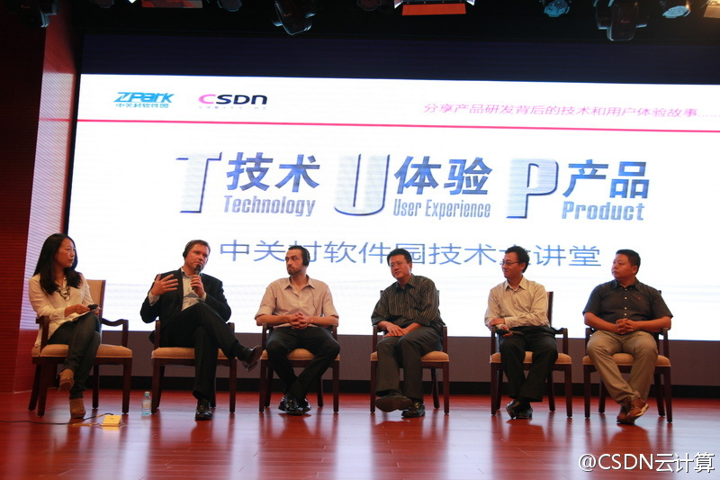
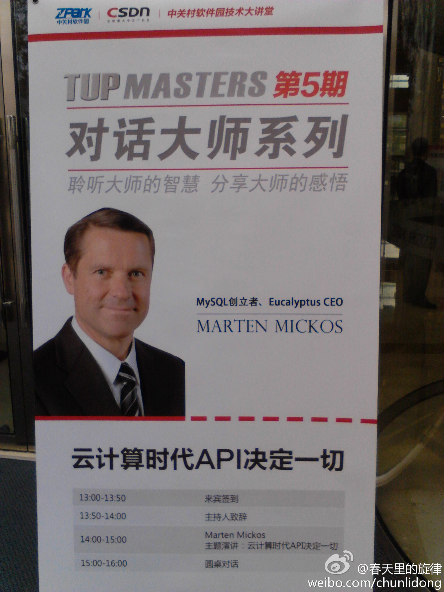

这个玉米地二维码比那个把树林种成“心”型怀念爱人的故事，显得科技含量高，而且商业意识好。但心型树林被传播得更广，人们总是会被故事和爱情所打动。@拿云时代:加拿大的农民夫妇Kraay与Rachel在一块面积达7英亩（2.8万平方米）的玉米地上种出了二维码；若有人在乘飞机路过时拿手机对这块地一扫，就可以自动跳转到他们自家的网站。目前，这块玉米地被正式收录进了吉尼斯世界纪录，成为世界上最大的二维码。这才是真正的"码农"！
现场嘉宾还有MadeiraCloud CEO Daniel, 丰牵云启CEO@邓侃 @拿云时代 解决方案总监 赵天立 CSDN和《程序员》创始人 @蒋涛CSDN //@程序员杂志: 对话大师，就在本周四下午，上地中关村软件园软件广场（4号楼A座）。现场有中英文同声传译的哦@程序员编辑部:Marten Mickos，前MySQL CEO、开源云计算平台Eucalyptus CEO，世界公认的开源软件领袖，被其祖国芬兰称为继Linux之父Linus Torvalds之后又一民族英雄。就在9月20日，他来到中国，为我们带来一场关于云计算时代API的技术演讲，名额有限，还等什么，快来报名吧。免费报名地址：网页链接
回复@何大少V:Marten认为是人少，资源不多，芬兰人有意识从智慧和创新中获取财富，而且，虽然是小国，但他们的视野是全球性的。 //@何大少V:Linux,MySQL..芬兰点解可以甘劲...@CSDN云计算:【解读芬兰开源成功密码】从Linux到MySQL，只有几百万人口的北欧小国芬兰创造了开源界的两大传奇。Eucalyptus CEO Marten Mickos表示，芬兰还没有北京大，芬兰语非常复杂，像编程一样；芬兰人很害羞，芬兰天气寒冷。什么才是真正的原因？CSDN将会就芬兰的开源成功与Marten Mickos深入探讨#TUP Masters# 
中关村软件园对这次活动相当支持啊，现场软件园的工作人员比CSDN来的工作人员都多。晚宴中，Marten和桉树的CFO王宁一再称赞这次活动。看起来在美国生活久了的芬兰人和中国人都学会了美式夸奖法。@春天里的旋律:在中关村软件园参加“对话Marten Mickos ”活动。Marten是开源数据库MySQL创立者、开源云计算平台Eucalyptus（桉树）公司CEO，是世界公认的开源软件领袖，被其祖国芬兰称为继Linux之父Linus Torvalds之后又一民族英雄。讲座分析了云计算时代API的重要性，并讨论了“开源”+“云计算”的模式。 
@邓侃 在回答听众的提问时: 比较openstack和桉树，支持了一把桉树，说了桉树的几个优势，Marten在旁听得露出了笑容。@Tanthalas:marten 很好的夸奖了一下cloudstack，再赞一下！ 我在:网页链接
回复@卷毛_踲:现场也有听众说几年前安装过桉树，难用，最后还没装上。Marten很爽快地承认了这点，并说正在纠正这个问题。这个历史问题可能与桉树脱胎于学术界有关，学术界出的东西，向来易用性不大好。@Tanthalas:marten 很好的夸奖了一下cloudstack，再赞一下！ 我在:网页链接
@CSDN包研 @董世晓 @孟迎霞 @刘江总编 我对媒体圈还不太了解，是这么回事么?@思考的蛋:IHS会议听下来，感叹行业媒体记者如不自我定向，前途会比较黯淡。一可做某领域分析师，大数据时代拼你的专注和专业，逐渐凭个人威望游走媒体和实业两界；二做幕后制作人，嗅觉敏锐，善运作调度，抢先把信息和人脉化为独家资讯。以往单纯固守被邀参会、改编新闻稿的方式，已变成冒险：因你可替代。